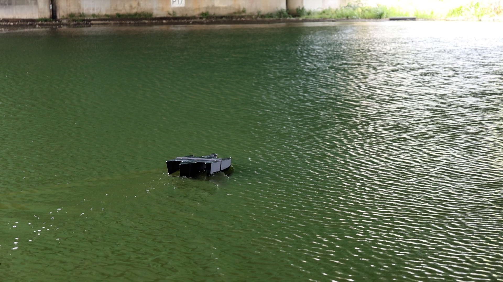

Navigation
Uses GPS and heading data to calculate the distance and direction to a target waypoint.
A surface vehicle platform that brings together GPS navigation, propulsion control and onboard data logging.
Test prototype · Not for sale
Uses GPS and heading data to calculate the distance and direction to a target waypoint.
Turns navigation inputs into throttle and steering commands for the onboard controller.
Records position, sensor readings, control signals and battery status for review.
Software is open source. Designated V1 reference STL files permit noncommercial use, modification and redistribution under CC BY-NC-SA 4.0. Credit Brillnova and share modified files under the same license. Original CAD remains proprietary.
| Length | 0.7 m |
|---|---|
| Width | 0.15 m |
| Draft | 0.1 m |
| Mass | 2.9 kg |
| Length | 0.5 m |
|---|---|
| Width | 0.06 m |
| Draft | 0.025 m |
| Mass | 0.33 kg |
| Length | 0.7 m |
|---|---|
| Width | 0.46 m |
| Mass | 4.14 kg |
Complete assembly: central hull, two outriggers and lid.
Building on V1 with a modular hull design that adapts to different uses, alongside a browser-based ground control station.
V2 is being developed to carry forward V1's navigation, propulsion control and data logging, reusing its GPS, heading and battery sensor code.
Interchangeable hull modules let users configure the vessel to suit their intended use, replacing and combining modules for different needs.
A ground control interface brings together position, heading, battery and module status, with manual throttle and steering controls.
Development noteThese features are under development. Final specifications and availability have not yet been announced.